Ember Costumes
Tutorials and Resources
Leather Bracers
These are advanced multilayered leather bracers I made for my LARP character, Willy the Sherrif who turned into a vampire
but who then came back to life.
First I drew what I wanted the bracers to look like on paper (right) for a pattern. That way I had all the proper measurements for how big everything should be. I made them a bit bigger than usual because I planned to wear them over my chainmail and some padding. Of course, the buckles and straps gave me some leeway on sizing.
Once I had the pattern, I traced it onto the leather and cut out the pieces using my swivel knife.
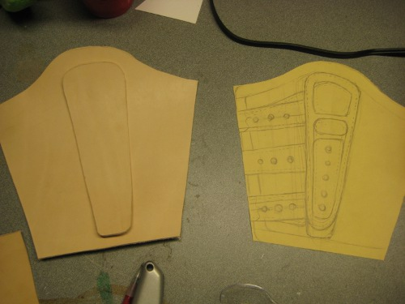
To tool the main piece of the bracer, I first made a grid in pencil to guide my stamping and make sure that it was more or less symmetrical and even. The pencil marks will be covered up later by the dye, but still be sure not to make them too dark.
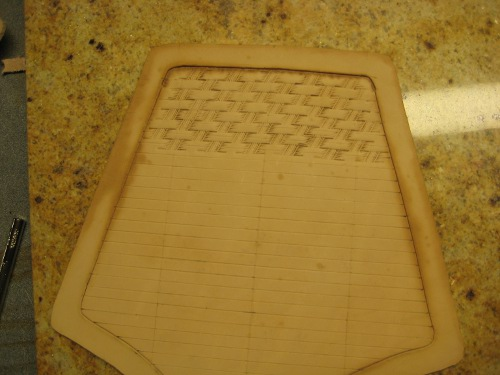
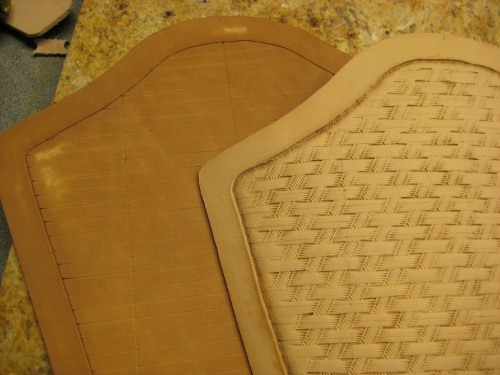
Next I dyed the backing piece using Ecoflow _____ and the straps (which I cut using a strap cutter) Ecoflow _____. Instead of trying to get a very uniform color, I tried to add texture to the pieces by intentionally mimicking the cross-hatch basket weave pattern I stamped on the backing piece.
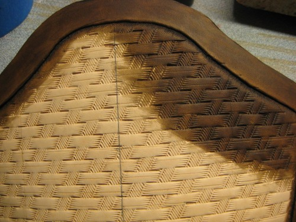
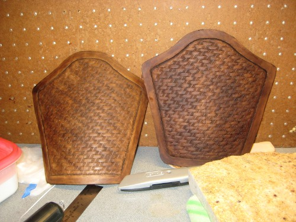
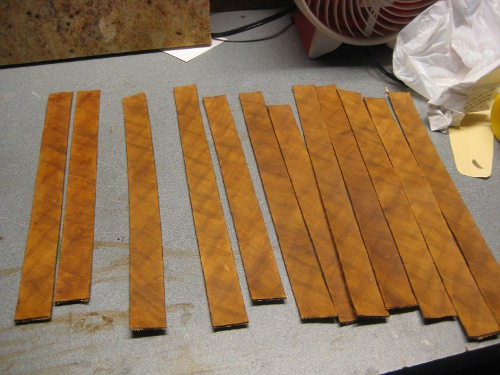
Next I stitched the straps onto the backing piece by punching holes in the straps where they will be stitched, then using a leather sewing needle, pliers, and sinew thread to actually attach them. This is, without a doubt, the most time consuming and difficult part of making these bracers!
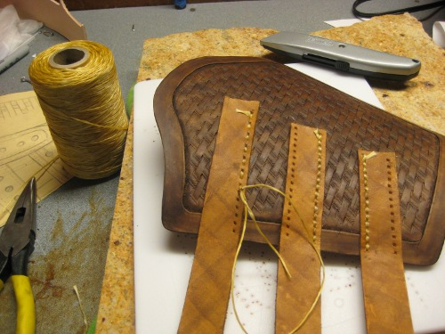
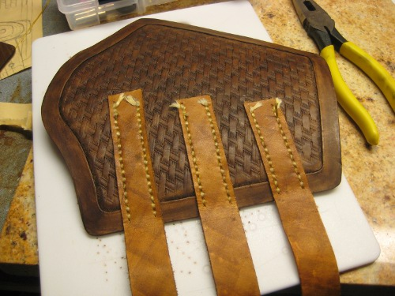

Next I stitched the straps onto the backing piece by punching holes in the straps where they will be stitched, then using a leather sewing needle, pliers, and sinew thread to actually attach them. This is, without a doubt, the most time consuming and difficult part of making these bracers!
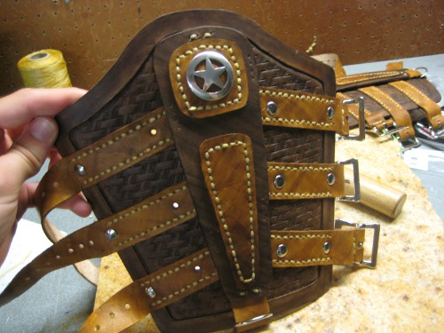
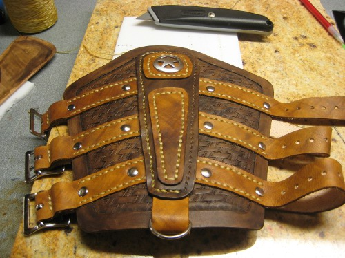
I added another piece to the back because...I'm cray-cray.
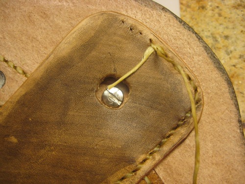
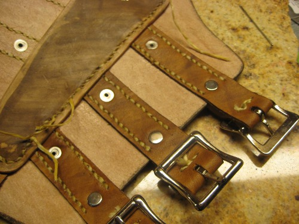
Shiny New Bracers!
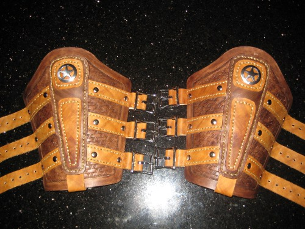
One of the best parts of using real leather is that the more worn it gets, the better it looks. This is what the bracers look like after a year of wear and tear larping once or twice a month out in the woods!
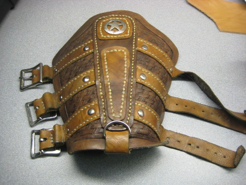
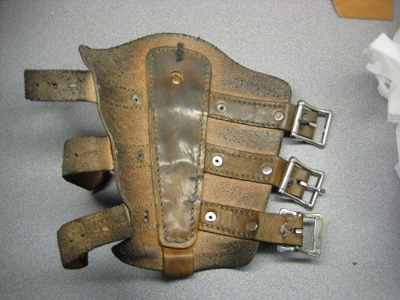
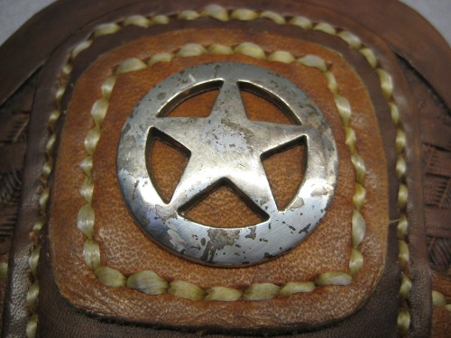
Back to Costume Gallery
Plan and Pattern
First I drew what I wanted the bracers to look like on paper (right) for a pattern. That way I had all the proper measurements for how big everything should be. I made them a bit bigger than usual because I planned to wear them over my chainmail and some padding. Of course, the buckles and straps gave me some leeway on sizing.
Once I had the pattern, I traced it onto the leather and cut out the pieces using my swivel knife.
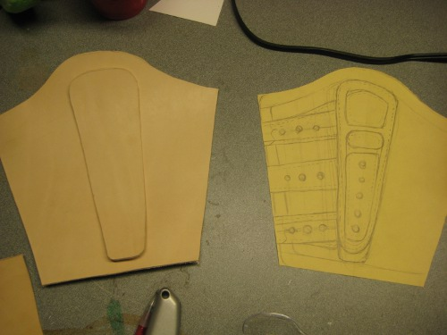
Tool Leather
To tool the main piece of the bracer, I first made a grid in pencil to guide my stamping and make sure that it was more or less symmetrical and even. The pencil marks will be covered up later by the dye, but still be sure not to make them too dark.
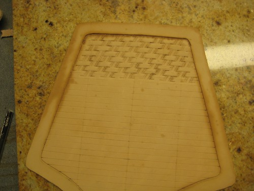
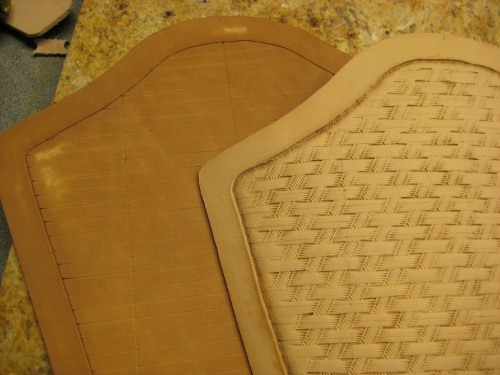
Dye Leather
Next I dyed the backing piece using Ecoflow _____ and the straps (which I cut using a strap cutter) Ecoflow _____. Instead of trying to get a very uniform color, I tried to add texture to the pieces by intentionally mimicking the cross-hatch basket weave pattern I stamped on the backing piece.
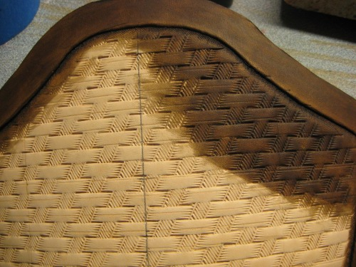
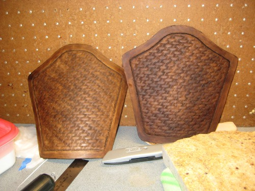
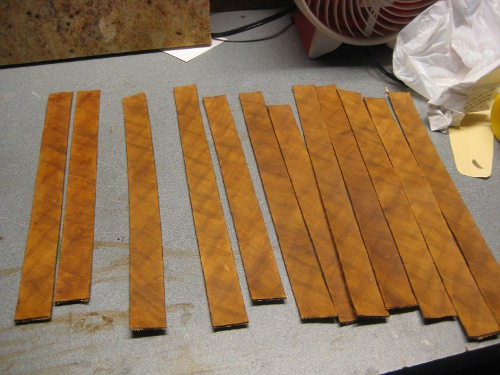
Attach Straps
Next I stitched the straps onto the backing piece by punching holes in the straps where they will be stitched, then using a leather sewing needle, pliers, and sinew thread to actually attach them. This is, without a doubt, the most time consuming and difficult part of making these bracers!
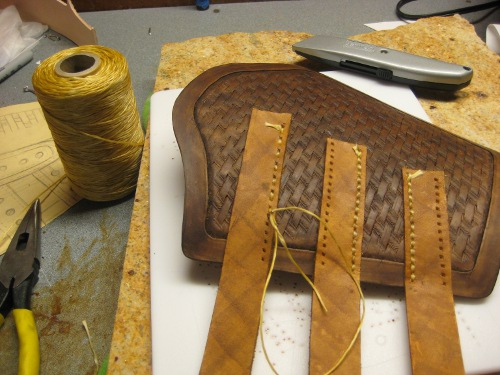
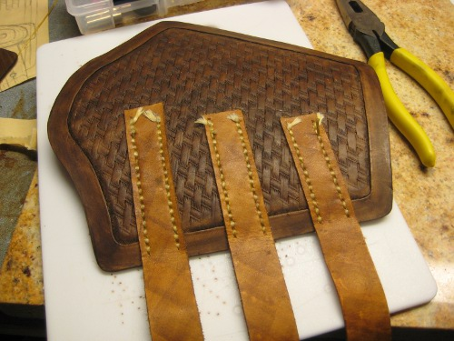
Attach Other Layers and Rivets
Next I stitched the straps onto the backing piece by punching holes in the straps where they will be stitched, then using a leather sewing needle, pliers, and sinew thread to actually attach them. This is, without a doubt, the most time consuming and difficult part of making these bracers!
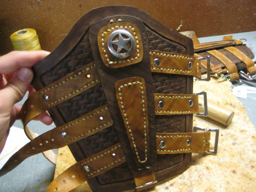
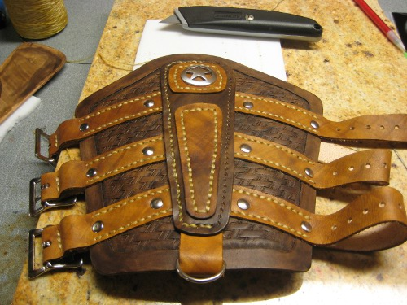
I added another piece to the back because...I'm cray-cray.
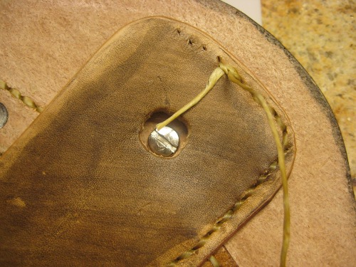
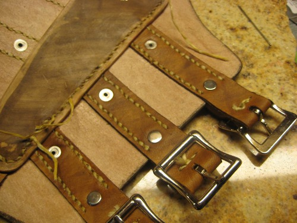
Done!
Shiny New Bracers!
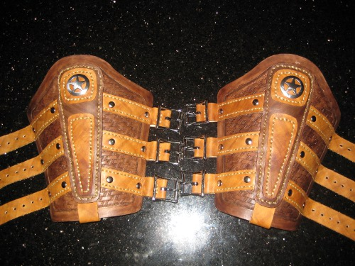
Follow-up: Natural Weathering
One of the best parts of using real leather is that the more worn it gets, the better it looks. This is what the bracers look like after a year of wear and tear larping once or twice a month out in the woods!
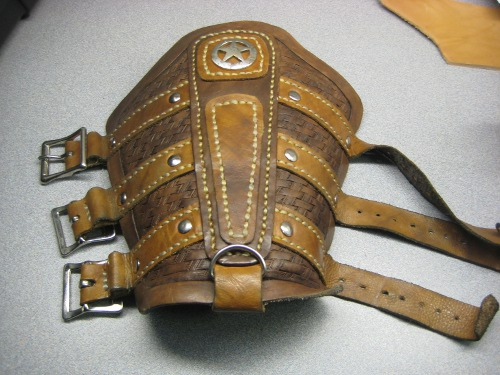
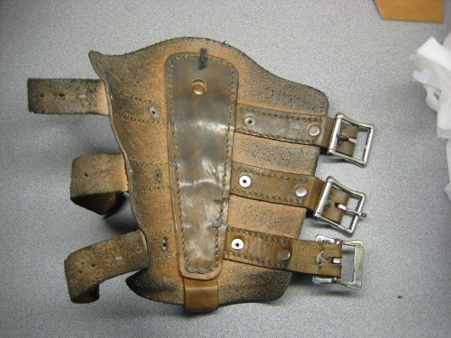
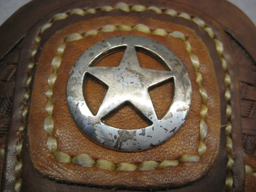
Back to Costume Gallery